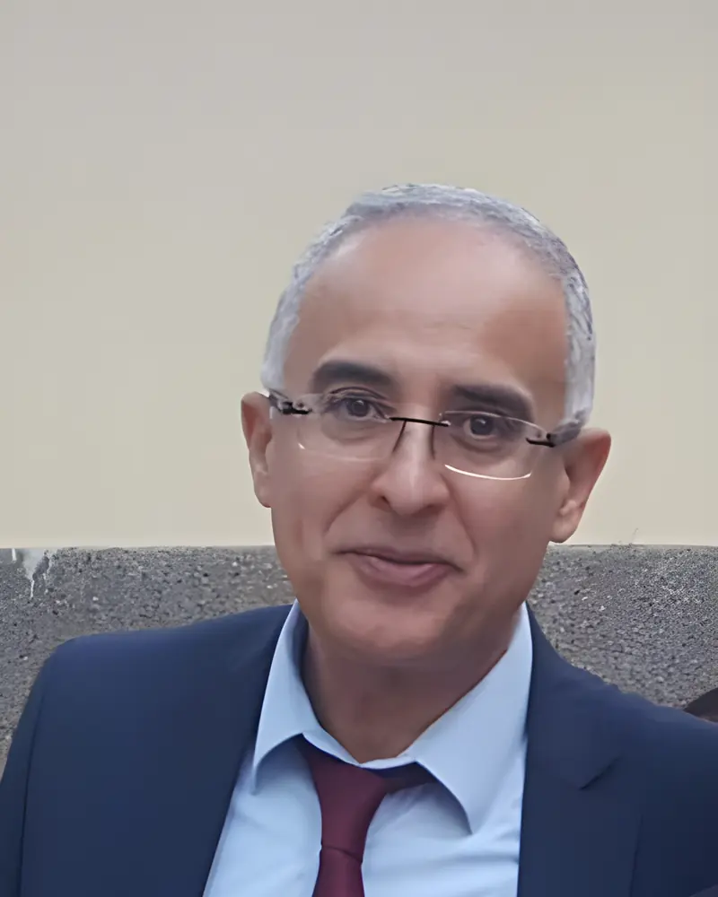
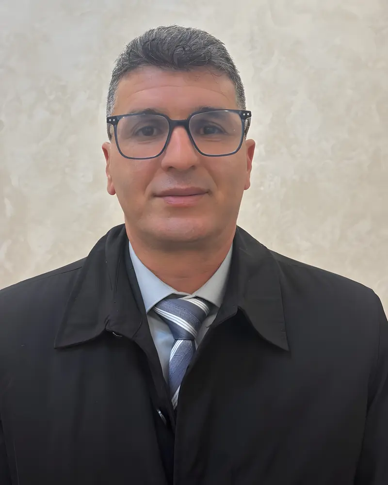
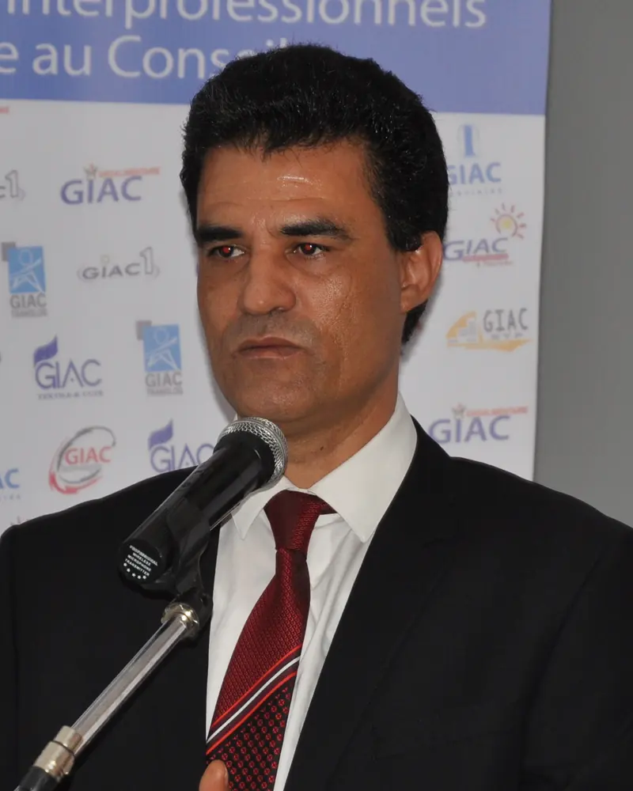
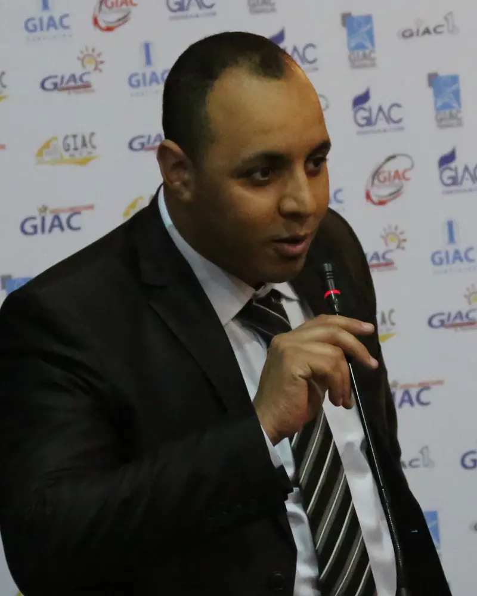

Organigramme
Un bureau issu de la profession, une équipe permanente au service des membres.
Le bureau
Il fixe le cap, au nom de la profession.
 Mustapha HASNAOUIPrésident
Mustapha HASNAOUIPrésident
Khalid BENHLIMATrésorier- Adel AMORSecrétaire général

Lhoussaine AZOURZMembre- Adil WAHBIMembre
L’équipe permanente
Elle suit vos dossiers au quotidien.

Mustapha MABKHOUTDirecteur
Faouzi CHOUKRIRAF, cellule d’assistance
Les racines
Ce sont les membres qui font vivre le réseau.
- 1 100
- entreprises
- 10
- fédérations
- 15
- associations